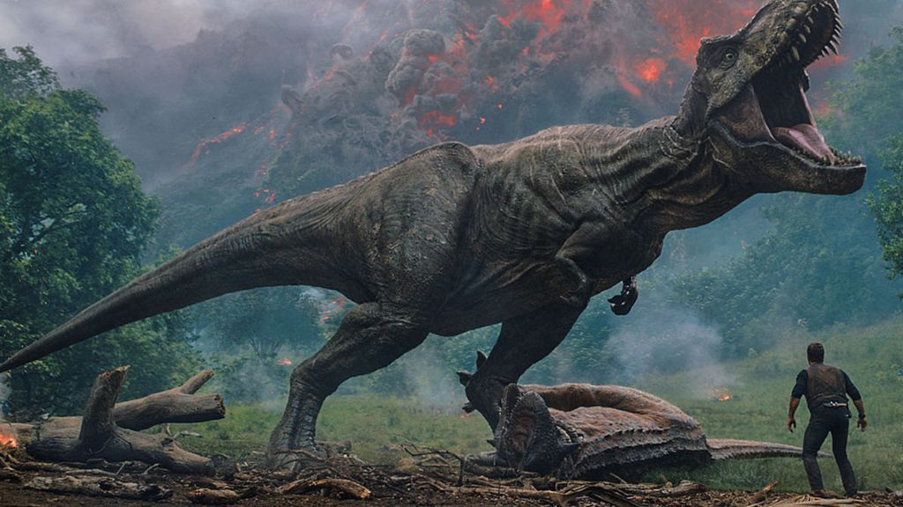
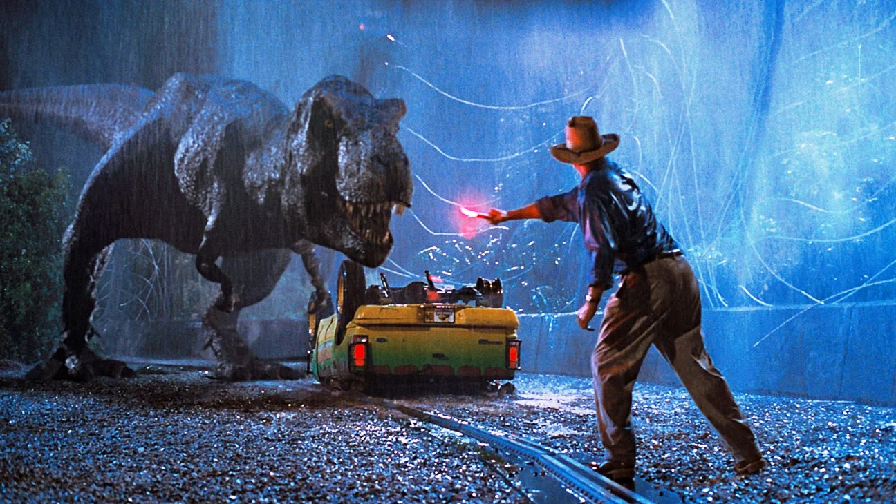
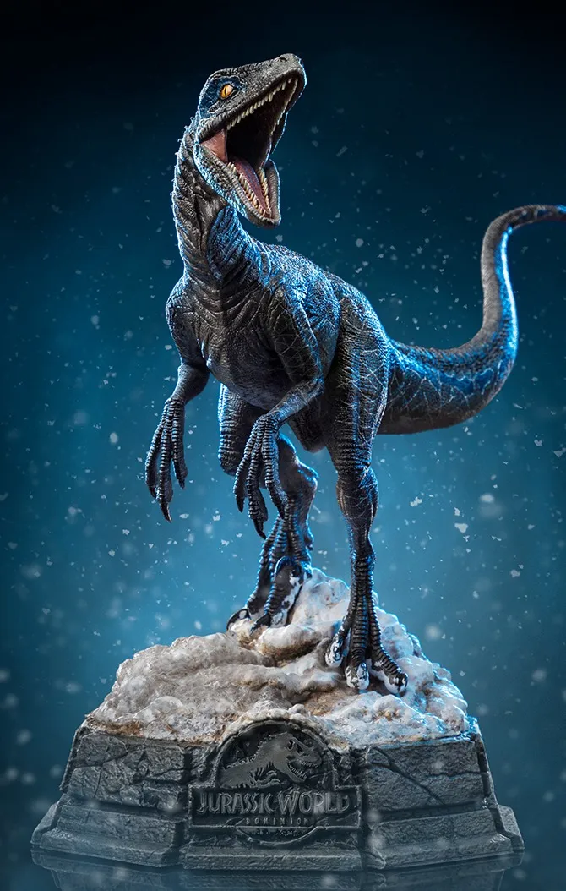

Trailer
Sinopse
O filme se passa na Ilha Nublar, onde o Jurassic Park original foi estabelecido. Agora, o parque foi reaberto ao público com novas atrações e dinossauros domesticados. No entanto, para atrair mais visitantes, a equipe de cientistas, liderada pela doutora Claire Dearing, cria o Indominus rex, um dinossauro híbrido geneticamente modificado. Quando o Indominus rex escapa de sua contenção, o parque entra em colapso, e Claire, junto com o ex-militar Owen Grady, deve salvar os visitantes e restaurar a ordem antes que seja tarde demais.
Elenco
Imagens


